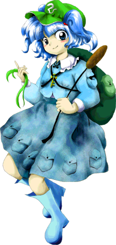

Nitori é frequentemente vista como:
Orgulhosa de sua raça – acredita que a tecnologia kappa é superior a qualquer outra.
Tímida com humanos – tende a fugir ou se esconder quando vê um humano sozinha.
Interessada em negócios – adora inventar coisas que possam render um bom lucro.
Ela transmite a sensação de uma cientista precoce que quer vender suas invenções a todo momento.
🧠 Inteligência avançada (com foco prático)
Nitori é conhecida por ser extremamente genial com engenharia:
Desmonta e recria ferramentas complexas
Foca em soluções mecânicas e matemáticas
Nem sempre entende nuances sociais ou sentimentais
Apesar disso, às vezes falha por ganância ou excesso de confiança em suas máquinas.
🎭 Comportamento interesseiro
Ela demonstra traços típicos de uma comerciante de elite:
Gosta de negociar e barganhar
Faz parcerias apenas se houver vantagem financeira
Pode ficar irritada quando suas invenções quebram
Seu jeito focado em tecnologia e dinheiro faz parte de sua personalidade.
🌿 Vida na natureza
Nitori vive próxima ao vale dos kappa (Montanha Youkai):
Passa muito tempo em sua oficina ao ar livre
Interage e trabalha com outros kappas
Protege seu território e suas invenções de intrusos
Ela prefere ambientes aquáticos, onde seus poderes e experimentos são mais eficazes.
🤝 Relação com os outros
Nitori interage com várias criaturas de Gensokyo:
Coopera com outros kappas e tengus da montanha
Pode desafiar ou vender mercadorias para humanos e youkais
Às vezes se alia a humanos (como Marisa), mas sempre de olho no lucro ou aprendizado
Apesar disso, não é maldosa e só quer o progresso de sua engenharia.
Engenheira e Inventora
Nitori é uma kappa cientista que vive nas proximidades dos rios da montanha, passando seus dias criando engenhocas e testando novas tecnologias.
Comerciante da Montanha Youkai
Como parte da sociedade kappa, Nitori constantemente busca vender seus produtos e criar novas frentes de negócios em Gensokyo.
Manipulação de água
O principal poder natural de Nitori é controlar a água:
Pode criar jatos e correntes aquáticas de alta pressão
Usa a água como camuflagem ou defesa
Consegue nadar e se mover perfeitamente em ambientes aquáticos
Esse poder é especialmente forte perto de rios e lagos.
Engenharia e Criação
Ela pode projetar e construir maquinários avançados livremente, misturando magia youkai com ciência.
Uso de Ferramentas (Mochila Kappa)
Como uma kappa, Nitori carrega uma mochila cheia de ferramentas e armas tecnológicas, estendendo seus braços mecânicos durante as batalhas.
Camuflagem Óptica
Por causa de seu traje e tecnologia, Nitori possui a capacidade de se misturar ao ambiente e ficar invisível para evitar confrontos diretos.
Mesmo não sendo a youkai fisicamente mais forte de Gensokyo, sua inteligência genial e arsenal tecnológico fazem dela uma oponente imprevisível.

Espécie:Kappa
Título:Super Ogiva Youkai (Super Youkai Warhead)